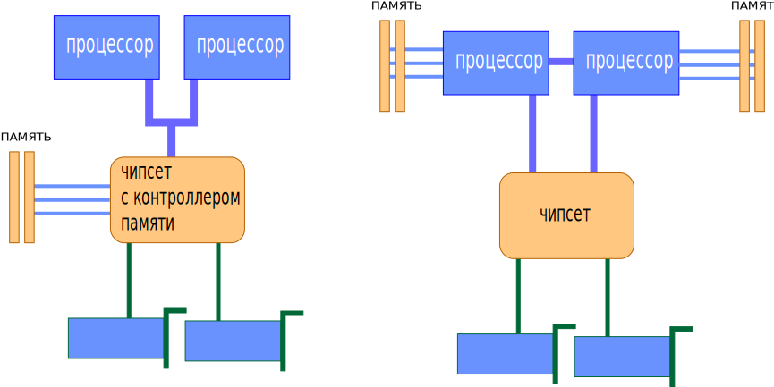

Итак, ранее выше мы уже говорили о том, что как команды, так и данные, попадают в процессор из оперативной памяти.
На самом деле всё немного сложнее.
Ещё недавно в большинстве x86-систем (т.е. компьютеров на базе x86-процессоров),
процессор к памяти обращаться сам не мог, т.к. не имел в своём составе соответствующих узлов.
Некоторые не самые новые, но ещё популярные линейки процессоров
(Intel Core 2, Celeron и Pentium всех видов) используют такую классическую организацию и сейчас.
В этой схеме процессор обращается к «промежуточному» специализированному устройству, называемому контроллером
памяти, а уже тот, в свою очередь — к микросхемам ОЗУ, размещенным на модулях памяти.
Модули вы наверняка видели — это такие длинные узкие текстолитовые «планочки»
(фактически — небольшие платы) с несколькими микросхемами на них, вставляемые в специальные
разъёмы на системной плате. Роль контроллера ОЗУ, таким образом, проста: он служит своего
рода «мостом» между памятью и использующими её устройствами
(а это не только процессор, но об этом — чуть позже).
В традиционной схеме, контроллер памяти входит в состав чипсета — набора микросхем,
являющегося основой системной платы. От быстродействия контроллера во многом зависит скорость
обмена данными между процессором и памятью, это один из важнейших компонентов,
влияющих на общую производительность компьютера. По «новой» схеме
(к ней относятся процессоры Intel Core с буквой «i», и все ныне выпускаемые CPU AMD),
контроллер памяти входит в состав самого процессора — теперь никаких посредников между
памятью и процессором нет, так что общаться им оказывается проще и быстрее.
Однако многочисленным устройствам ввода-вывода жизнь несколько усложнилась —
им путь до памяти стал на один шаг длиннее, т.к. чипсет никуда не исчез
(а лишь лишился контроллера памяти), и теперь обращаться к памяти требуется через процессор,
отвлекая его от выполнения программ. Тем не менее, новая схема является прогрессивной,
потому что процессору важнее всего получить доступ к памяти как можно быстрее,
даже ценой некоторого усложнения доступа для других устройств — именно он
является главным потребителем и производителем той информации, которая записана в памяти.
Любой процессор обязательно оснащён как минимум одной процессорной шиной,
которую в среде x86 CPU иногда по старинке называют FSB (Front Side Bus),
хотя современные процессоры имеют для неё разные названия (QPI для Intel и HyperTransport для AMD).
В многопроцессорных платах таких шин несколько, и связаны они с другими процессорами и чипсетом.
В домашних компьютерах, где процессор, как правило, один,
шина у него единственная (не считая шины памяти, если в процессор встроен её контроллер)
и связывает его с чипсетом, а через него — со всеми остальными устройствами.
На сегодняшний день вся память, используемая в современных десктопных x86-системах, имеет шину шириной 64 бита.
Это означает, что за один такт по данной шине одновременно может быть передано количество информации,
кратное 8 байтам (8 байт для SDR-шин, 16 байт для DDR-шин).
Особняком стоит только память типа RDRAM,
применявшаяся в системах на базе процессоров Intel Pentium 4 на заре становления архитектуры NetBurst,
но сейчас это направление признано тупиковым для x86-ПК
(к слову — руку к этому приложила всё та же компания Intel,
которая в своё время активно пропагандировала данный тип памяти).
Некоторую неразбериху вносят лишь многоканальные контроллеры,
обеспечивающие одновременную работу с несколькими отдельными друг от друга 64-битными шинами.
Применительно к 2-канальным котроллерам некоторые производители заявляют о
«128-битности».
Однако арифметика на уровне 1-го класса в данном случае работает с оговоркой: 2x64 равно 128
только когда все каналы работают одновременно.
Т.е. N-канальный контроллер памяти теоретически
может увеличить скорость работы с данными в N раз, но при этом ширина каждой шины памяти во всех
современных контроллерах, применяемых в x86-системах по-прежнему равна 64 битам.
На данный момент времени, одноканальный контроллер памяти можно смело назвать анахронизмом:
все современные x86-системы оснащены как минимум 2-канальными контроллерами памяти,
а некоторые — даже 3-канальными.
Скорость чтения и записи информации в память теоретически ограничивается исключительно
пропускной способностью самой памяти.
Так, например, двухканальный контроллер памяти
стандарта DDR2-800 теоретически способен обеспечить скорость чтения и записи информации,
равную 8 байт (ширина шины) * 2 (количество каналов) * 2 (протокол DDR, обеспечивающий
передачу 2 пакетов данных за 1 такт) * 400'000'000 (фактическая частота работы шины памяти
равная 400 МГц, т.е. 400 млн. тактов в секунду).
Упомянем, что полученное произведение
измеряется не в МБ/с (ГБ/с), а млн. (млрд.) байт/с, что несколько меньше честных двоичных
«мега-»
и «гига-».
Даже с учётом этого, значения, получаемые в результате практических тестов, как правило,
чуть ниже теоретических: сказывается «неидеальность» конструкции контроллера памяти,
плюс накладки (задержки), вызванные работой подсистемы кэширования самого процессора
(см. ниже раздел про процессорный кэш).
Однако основной «подвох» содержится даже не в накладках,
а в том, что скорость «линейного» чтения или записи является вовсе не единственной характеристикой,
влияющей на фактическую скорость работы процессора с ОЗУ.
Необходимо кроме линейной скорости считывания или записи учитывать ещё и такую характеристику, как латентность.
Латентность (она же — задержка) является не менее
важной характеристикой с точки зрения
быстродействия подсистемы памяти, чем скорость «прокачки данных».
Большая скорость обмена
данными хороша тогда, когда их размер относительно велик, но если нам требуется
«понемногу с разных адресов»
— то на первый план выходит именно латентность. Что это такое?
В общем случае —
время, которое требуется для того, чтобы начать считывать информацию с определённого адреса.
И действительно: с момента, когда процессор посылает контроллеру памяти команду на считывание
(запись), и до момента, когда эта операция осуществляется, проходит определённое время.
Причём оно вовсе не равно времени, которое требуется на пересылку данных. Приняв команду на
чтение или запись от процессора, контроллер памяти «указывает» ей, с каким адресом
он желает работать.
Доступ к любому произвольно взятому адресу не может быть осуществлён мгновенно. Возникает задержка:
адрес указан, но память не готова предоставить к нему доступ, особенно если он указывает на слишком
далёкое от предыдущей операции место (по разнице адресов).
В общем случае, эту задержку и принято
называть латентностью. У разных типов памяти она разная.
Так, например, память типа DDR3 имеет в
среднем большие задержки, чем DDR2 (при одинаковой частоте передачи данных).
В результате, если
данные в программе расположены «хаотично»
и «небольшими кусками», либо метод считывания или записи
совсем не последовательный, то скорость обмена становится намного менее важной, чем скорость доступа
к «началу куска», т.к. задержки при переходе на очередной адрес влияют на быстродействие
системы намного сильнее, чем скорость считывания или записи.
«Соревнование» между скоростью чтения (записи) и латентностью — одна из основных головных болей разработчиков современных систем: к сожалению, рост скорости чтения (записи) почти всегда приводит к увеличению латентности. Так, например, память типа DDR обладает в среднем лучшей (меньшей) латентностью, чем DDR2. В свою очередь, у DDR3 латентность ещё выше (то есть хуже), чем у DDR2. Правда, здесь следует хорошо понимать, каким образом следует правильно сравнивать латентность. Если вы интересовались данным вопросом, вам наверняка хорошо знакома строчка вида «4-4-4-12», обозначающая как раз величину задержек при выполнении некоторых операций. Задержки в данном случае указаны в тактах частоты, на которой работает память. В то же время, если нас интересует латентность как единица измерения скорости, то считать её нужно не в тактах, а в секундах. Именно на этом часто «прокалываются» не очень хорошо разбирающиеся в вопросе пользователи, не понимающие, почему латентность, к примеру, в 6 тактов, может быть меньше, чем латентность в 4 такта. А всё очень просто: например, если модуль памяти с латентностью в 6 тактов, работает на частоте 800 МГц, а модуль памяти с латентностью 4 — на частоте 400 МГц — то совершенно очевидно, что 6 тактов на частоте 800 МГц займут меньше времени, чем 4 на частоте 400.
Также следует понимать, что «общая» латентность подсистемы памяти зависит не только от неё самой, но и от контроллера памяти и места его расположения — все эти факторы тоже влияют на задержку. Именно поэтому компания AMD в процессе разработки архитектуры AMD64 решила «одним махом» решить проблему высокой латентности, интегрировав контроллер прямо в процессор — чтобы максимально «сократить дистанцию» между процессорным ядром и модулями ОЗУ. Затея удалась, но с подвохом: теперь система на базе процессора AMD может работать только с той памятью, на которую рассчитан контроллер процессора. Наверное, поэтому компания Intel долго не решалась на такой кардинальный шаг, предпочитая действовать традиционными методами: усовершенствуя контроллер памяти в чипсете и механизм предзагрузки в процессоре (про него см. ниже) — пока всё-таки не согласилась, что идея AMD выгодней.
В завершение заметим, что понятия «скорость чтения / записи» и «латентность», в общем случае, применимы к любому типу памяти — в том числе не только к классическому ОЗУ (SDR, Rambus, DDR, DDR2, DDR3, …), но и к кэшу (см. ниже). Процессор: сведения общего характера